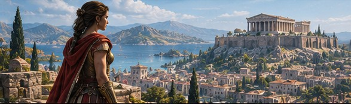

Protagonista
Kassandra / Alexios
El jugador elige a uno de los dos hermanos como protagonista de la aventura.
Durante la Guerra del Peloponeso, una persona mercenaria descubre secretos sobre su familia y una organización que manipula el mundo griego. Las decisiones del jugador influyen en relaciones, alianzas y desenlaces.
Durante la Guerra del Peloponeso, una persona mercenaria descubre secretos sobre su familia y una organización que manipula el mundo griego. Las decisiones del jugador influyen en relaciones, alianzas y desenlaces.
Este dossier reúne los personajes, el contexto histórico, los lugares y las actividades que definen esta entrega. La información está organizada para descubrir el juego sin perderse entre sus distintas capas.
Las figuras que dan forma a la historia de Assassin’s Creed Odyssey.

El jugador elige a uno de los dos hermanos como protagonista de la aventura.
Historiador que acompaña al protagonista y aporta contexto sobre Grecia.
La madre del protagonista, vinculada a los misterios de su linaje.
Una mujer influyente en Atenas y en las intrigas del mundo griego.
Grecia clásica · 431–422 a. C. · Una recreación histórica que combina acontecimientos reales y ficción.
La búsqueda familiar conduce a través de las islas y ciudades de Grecia, en medio de la guerra entre Atenas y Esparta. La trama se cruza con el Culto de Kosmos y con los vestigios de una civilización anterior.
Regiones, ciudades y escenarios que dan personalidad a esta aventura.
Centro político, cultural e intelectual de la Grecia clásica.
Potencia militar y rival de Atenas.
Archipiélago para explorar, navegar y descubrir misiones.
Regiones con conflictos, fortalezas y paisajes diversos.
Los sistemas principales que definen la forma de jugar esta entrega.
Habilidades activas, equipo por rareza y progresión.
Barco mejorable para navegar y combatir.
Diálogos y elecciones que alteran relaciones y algunos desenlaces.
Sistema de cazarrecompensas que persigue al protagonista.
Investigar y eliminar miembros de una organización secreta.
Participar en batallas entre Atenas y Esparta.
Qué hacemos durante la aventura, cómo exploramos el mundo y qué sistemas conviene dominar.
Reunir pistas para descubrir la identidad de miembros del Culto de Kosmos, explorar fortalezas y tumbas, completar contratos, navegar entre islas y elegir bandos en las batallas de conquista.
Detalles y sistemas especiales que merece la pena descubrir durante la exploración.
El Culto de Kosmos se revela mediante pistas y ramas de investigación.
Las decisiones pueden modificar relaciones y el desenlace familiar.
Los lugares de poder y las tumbas esconden mejoras y referencias a la Primera Civilización.
ARCHIVO EN AMPLIACIÓN · Se añadirán ubicaciones concretas y capturas propias a medida que se complete la documentación de cada juego.
Amplió la vertiente RPG, incorporó decisiones más visibles y convirtió el mundo griego en un gran escenario de exploración.